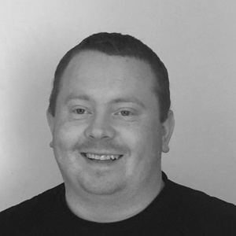
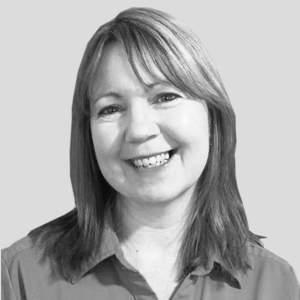
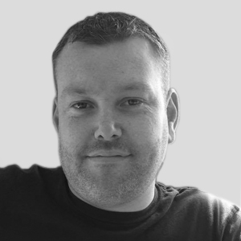
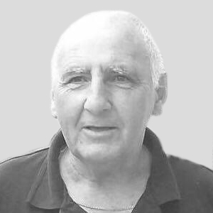

Adam founded The K Woods Foundation in memory of his Father Mr Kenny Woods. Adam has experienced, first hand, the difficulties a person living with Dementia can have, and also the difficulties those loved ones supporting the individual have to manage on a day to day basis. This enables him to fully understand what support is required and how much that support can be missed if not provided. Adam has spent the majority of the last 2 years actively pushing the Foundation into the direction he wishes it to take. It is his drive, and often personal input into fundraising, that has made the Foundation what it is today. Adam also works in a local Residential Care Home for individuals living with Dementia, and plays a vital role in driving forwards the success and standard of the Home, in order to improve the lives of those who live there.
Brian joined the team in February 2016. He brings a wealth of experience and practical knowledge of Dementia from his work. He is passionate about the care and support people with Dementia should have, and works tirelessly to improve the services we provide. His main focus is the development of our A.C.E.S Group at our drop-in centre.
Mary has supported the Foundation for the past 2 years, often personally taking part in the fundraising events, and alongside Adam and Ben has completed the 3 mountain climbs the team has attempted. Mary brings a robust managerial approach to the Foundation, which comes from her 25 years plus experience in both business and care management. Mary is exceptionally passionate about the care older people receive, especially those with Dementia, and drives forward the standards set both in the care home she manages and within the wider community by the standards she and the home achieve.
Ben has been working with the foundation since July 2015. He has helped to organise and manage the events the foundation runs. He has took part in various fundraising efforts and continues to be passionate about driving the foundation forwards. Ben has experience working with people living with Dementia and strives to improve the life and wellbeing of the individuals we support.
Paul has been supporting the foundation for the past 2 years, often working alongside Adam to organise and manage the behind the scenes side of fundraising. Paul has extensive experience in the area of fundraising, He has collaborated with other to raise a staggering £50,000 for Claire House over the past 20 years. Paul has personal experience of Dementia, and the support required as his Mother lived with the condition for many years, and eventually both her, and Paul’s father, passed away following periods of time in local care homes. Paul currently works in the local care home his Mother lived in as the Handyperson. He often supports the trips out the residents their go on, and is always looking for ways to improve the homes environment and experience for those who live there.